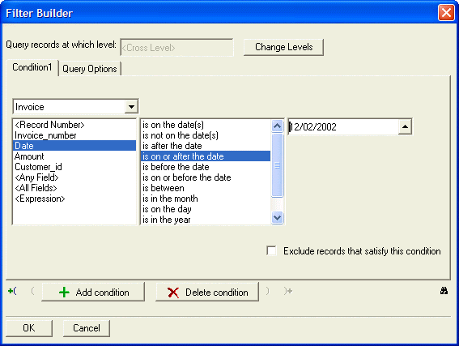

Filter Builder
When selecting records for a form, browse, report, mail labels, letters, or when performing operations, Alpha Anywhere uses a filter expression to determine which records to include. Filter Expressions evaluate to a TRUE or FALSE value. as Alpha Anywhere scans through a table, it selects the records where the filter expression evaluates to TRUE; it ignores the records where the filter expression evaluates to FALSE.
For example, if you wanted to create a filter which allows only records with a value of 200 or greater in an AMOUNT field, you could use the filter AMOUNT>=200.
The Filter Builder lets you create powerful filter expressions by navigating through easy-to-understand dialog boxes. The Filter Builder is a tabbed-dialog box, with separate tabs for query conditions and options.

Procedure
Typically, you access the Filter Builder by clicking the Filter Expression
 button. The following sequence will
open the Filter Builder:
button. The following sequence will
open the Filter Builder:Select Query > Special Queries.
Choose "Records Selected by a Filter Expression".
Click the
button in the Filter Expression
field.Add a filter condition.
Select a field from the list at the left side of the screen.
Select an Operator from the list in the middle of the screen.
Click
 in the Condition Value column
to set the condition value in the Value dialog
box. (For more information, see ((|#Setting_the_Condition_Value|Setting the Condition Value)) below.)
in the Condition Value column
to set the condition value in the Value dialog
box. (For more information, see ((|#Setting_the_Condition_Value|Setting the Condition Value)) below.)Optionally click Add Condition.
Select one of the two radio buttons to determine whether both conditions must be true ( AND this condition ) or either may be true ( OR this condition ).
If you added a filter condition in step 3, repeat steps 2a through 2c, otherwise continue with step 4.
Use the Add Opening Parenthesis and Add Closing Parenthesis buttons to specify the order of precedence when evaluating the expression. For example, you can evaluate the following expression in two ways:
|
(Lastname = "Smith") .and. ( (Bill_city = "Boston") .or. (Bill_state_region = "MA") ) ( (Lastname = "Smith") .and. (Bill_city = "Boston") ) .or. (Bill_state_region = "MA") |
Optionally check the Exclude records that satisfy this condition to invert the logic of the condition.
Click the Query Options tab.
Optionally, check the Exclude records that satisfy search criteria to invert the logic of the query.
Optionally, check Unique records only to eliminate duplicate records.
Optionally, make a selection from the Sub-select Options list.
If required, enter the value of N.
Click OK to continue.
Click Cancel to discard your inputs and exit from the Filter Builder.
Click
 to display the Filter Expression
dialog box, which shows the Xbasic filter expression you created in the
Filter Builder. This is an excellent way to
learn the syntax for creating filter expressions.
to display the Filter Expression
dialog box, which shows the Xbasic filter expression you created in the
Filter Builder. This is an excellent way to
learn the syntax for creating filter expressions.Click Expression Builder to switch to the Expression Builder.
The Value dialog box offers options for setting the condition value for your filter.
Optionally, click Select an existing value from the field.
Click the
button to display a field value list.Alpha Anywhere displays values from the field you select in the Filter Card field column. Navigate to the value you want and double-click to select it.
Optionally, click Specify a value now.
Type in a value, or begin with "=" to enter an expression.
Optionally, click Specify a value in an object on the current form or browse layout.
Here you can specify an object name to use its value, or click
to open the Select a Control dialog box.Alpha Anywhere displays the current layout objects available and the object's value. Double-click an object to select it.
Optionally, click Specify a variable that contains the value to search for.
Click the Select Variable button to open the Select Variable dialog box.
Alpha Anywhere displays variable categories. Click on a variable category to see the variables currently available. When you see the variable you want, select it, and click the Insert button.
Click OK to continue or Cancel to discard your inputs.